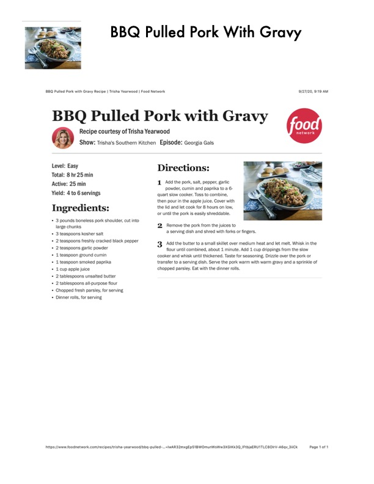

BBQ Pulled Pork With Gravy

Original cookbook page 90
Easy slow cooker pulled pork with homemade gravy, courtesy of Trisha Yearwood from Trisha's Southern Kitchen.
Prep: 25 min (active) • Cook: 8 hr • Total: 8 hr 25 min
Ingredients
- 3 pounds boneless pork shoulder, cut into large chunks
- 3 teaspoons kosher salt
- 2 teaspoons freshly cracked black pepper
- 2 teaspoons garlic powder
- 1 teaspoon ground cumin
- 1 teaspoon smoked paprika
- 1 cup apple juice
- 2 tablespoons unsalted butter
- 2 tablespoons all-purpose flour
- Chopped fresh parsley, for serving
- Dinner rolls, for serving
Instructions
- Add the pork, salt, pepper, garlic powder, cumin and paprika to a 6-quart slow cooker. Toss to combine, then pour in the apple juice. Cover with the lid and let cook for 8 hours on low, or until the pork is easily shreddable.
- Remove the pork from the juices to a serving dish and shred with forks or fingers.
- Add the butter to a small skillet over medium heat and let melt. Whisk in the flour until combined, about 1 minute. Add 1 cup drippings from the slow cooker and whisk until thickened. Taste for seasoning. Drizzle over the pork or transfer to a serving dish. Serve the pork warm with warm gravy and a sprinkle of chopped parsley. Eat with the dinner rolls.
Recipe #90 from collection